Software engineering & front-end development
Build and rebuild hospitality websites, develop reusable templates, and support live sites through ongoing production maintenance, client-requested enhancements, debugging, and accessibility remediation.
Software Engineer | Front-End Developer | Web Accessibility
I build accessible, responsive websites and reusable front-end templates, and keep them working in production.
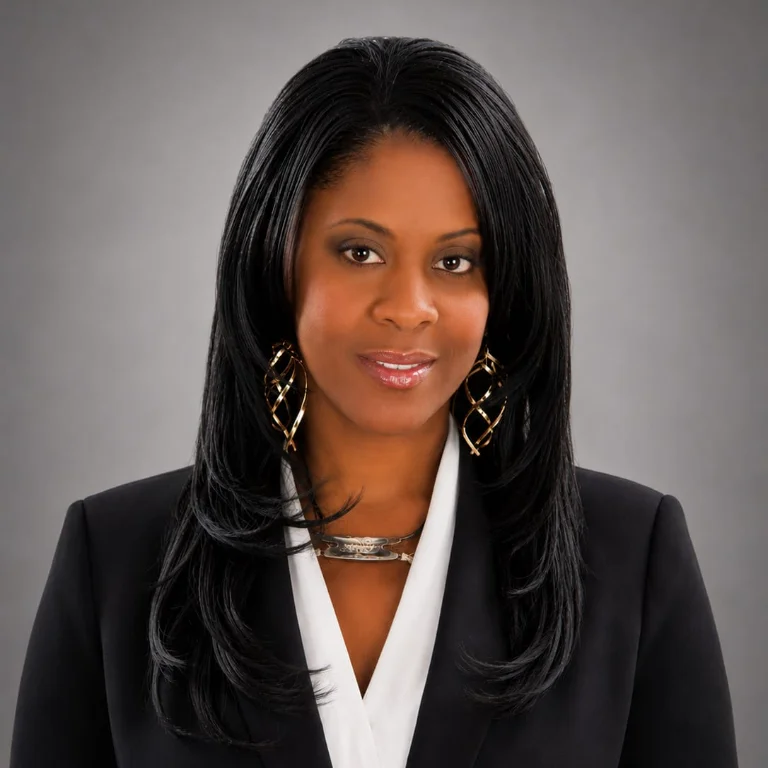
About
I design and develop responsive, accessible websites from concept to implementation. For independent client projects, I create tailored website designs, collaborate with clients through the review and approval process, and transform approved layouts into functional websites using HTML, CSS, JavaScript, and custom WordPress themes.
My professional experience also includes reusable front-end architecture, CMS-driven hospitality websites, production troubleshooting, accessibility improvements, and ongoing website maintenance.
Build and rebuild hospitality websites, develop reusable templates, and support live sites through ongoing production maintenance, client-requested enhancements, debugging, and accessibility remediation.
Lead client discovery, develop responsive websites, recommend user-friendly designs, and advise on branding consistency and digital presence.
Claude, OpenAI Codex, and Kiro as development assistants.
A selection of websites I've built, rebuilt, maintained, and enhanced throughout my professional career and independent consulting work.
I also maintain production websites, implement client-requested changes, debug technical issues, and remediate accessibility problems.
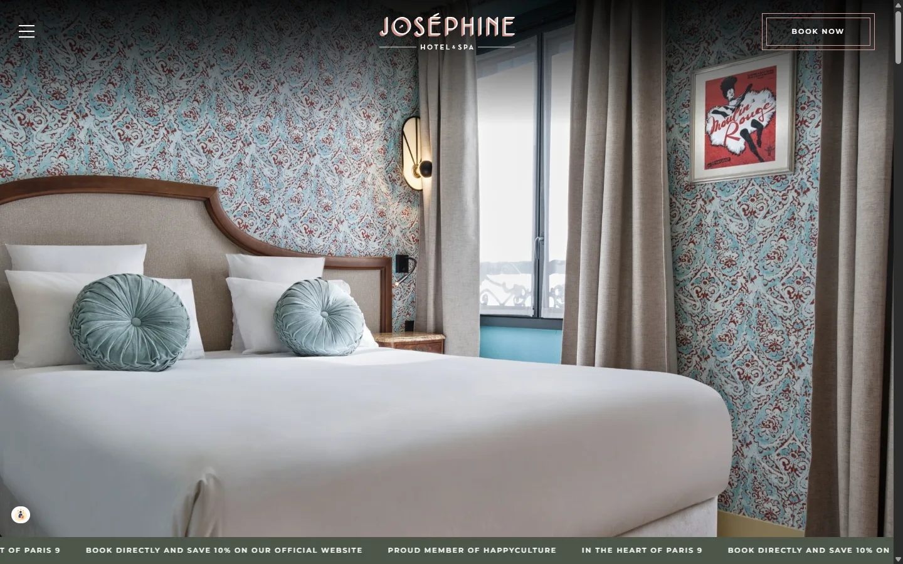
Master template & property rebuilds
Built a reusable master template in 2026 using Sass, mixins, and global variables. Used it for Josephine Hotel and six additional hotel property rebuilds.
Visit the Josephine Hotel website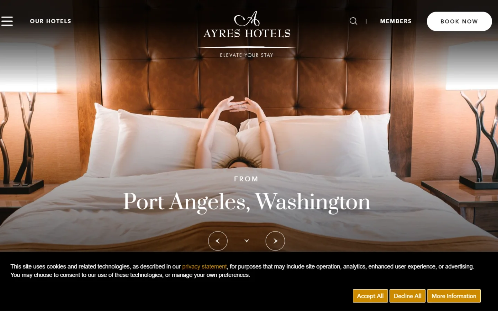
Multi-property development
Developed a multi-property hospitality website covering more than 20 properties.
Visit the Ayres Hotels website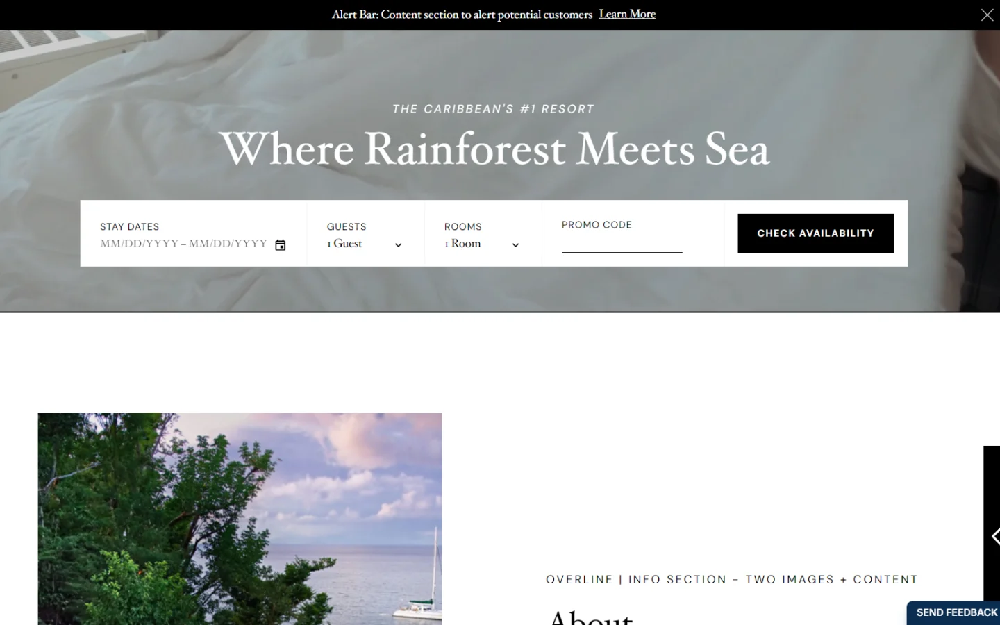
Website build
Built the website in 2026.
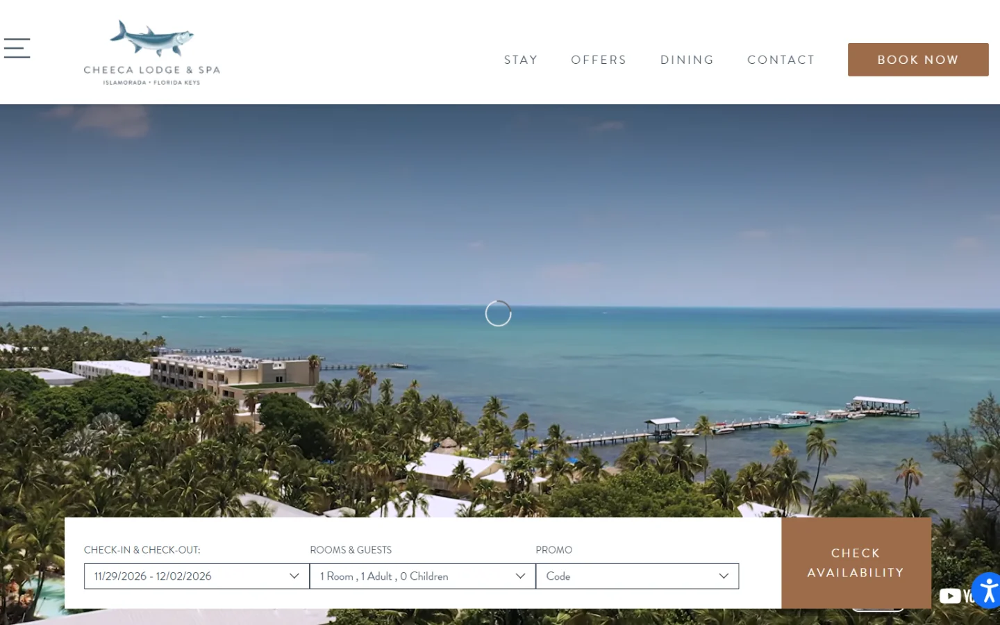
Website development
Personally developed the website while working at Cendyn.
Visit the Cheeca Hotel website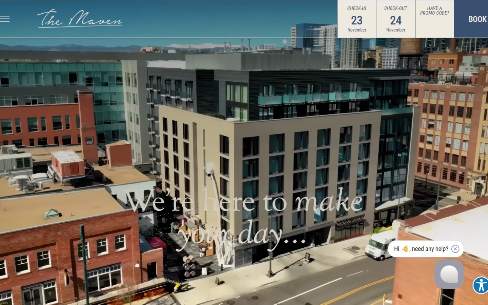
Website development
Personally developed the website while working at Cendyn.
Visit The Maven Hotel website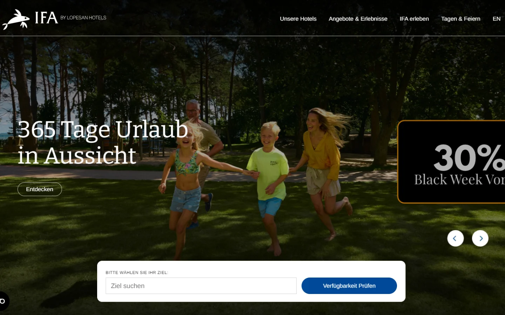
Website development
Personally developed the website while working at Cendyn.
Visit the IFA Hotels website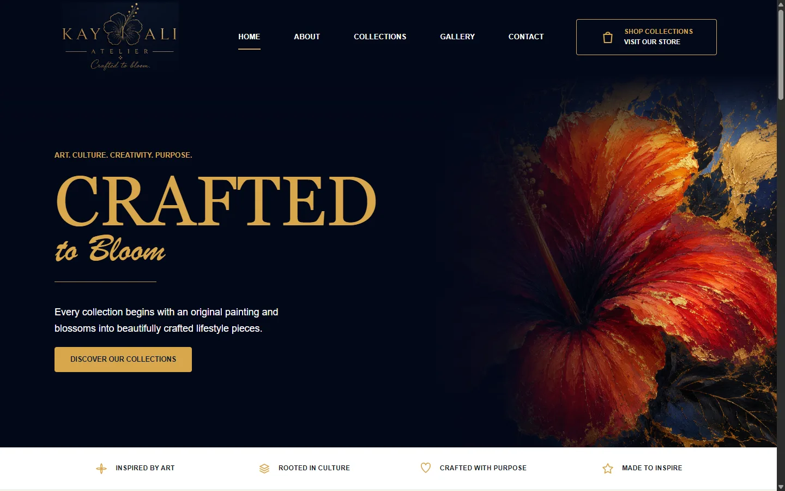
Website Design & Custom WordPress Development
Personally designed and developed a responsive website with a custom WordPress theme.
Visit the KAY-ALI Atelier website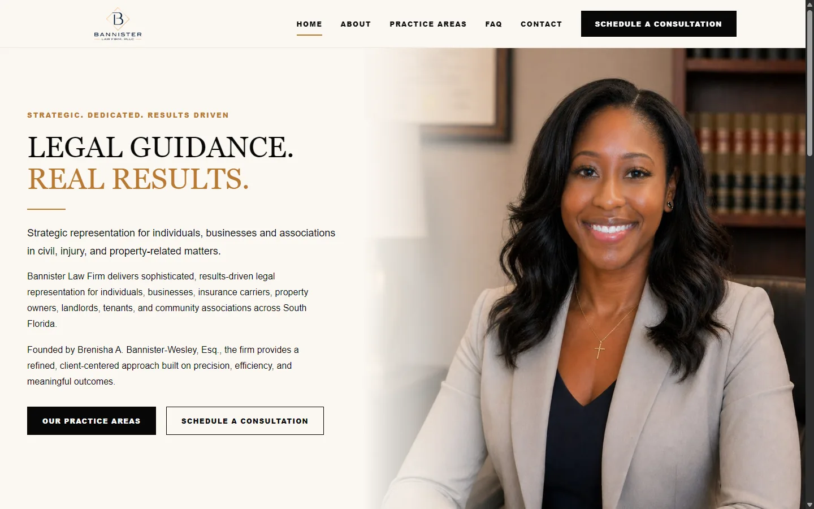
Website Design & Custom WordPress Development
Personally designed and developed a responsive website with a custom WordPress theme.
Visit the Bannister Law Firm website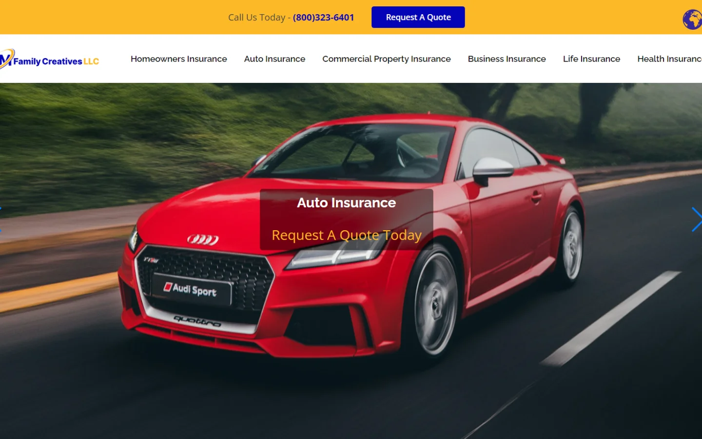
Website Design & Custom WordPress Development
Personally designed and developed a responsive website with a custom WordPress theme.
Visit the JM Family Creatives website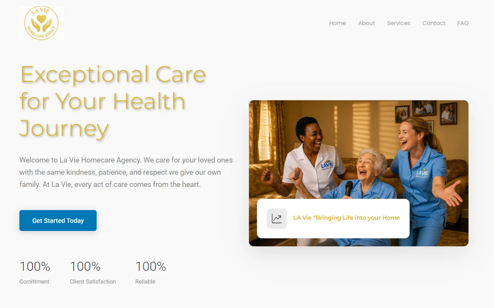
Website Design & Custom WordPress Development
Personally designed and developed a responsive website with a custom WordPress theme.
Visit the La Vie Home Care website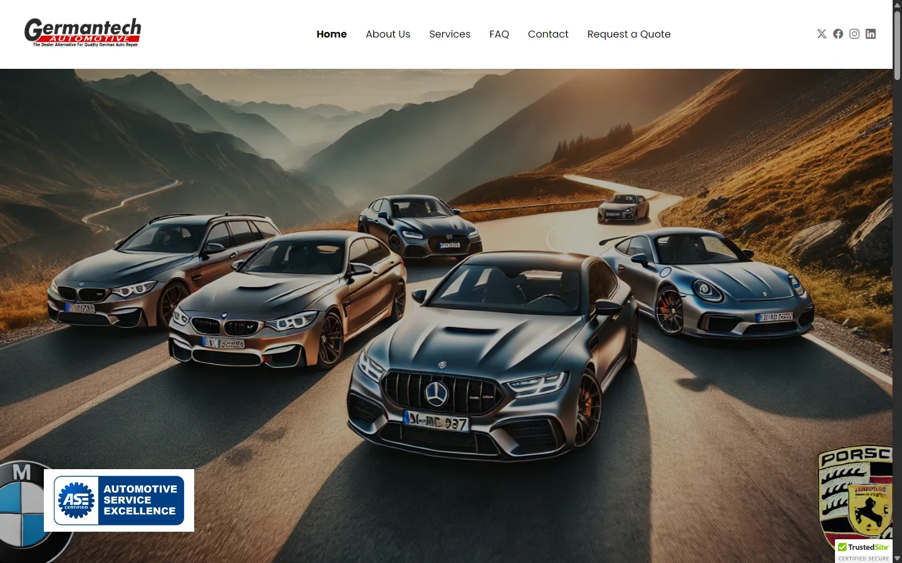
Website Design & Custom WordPress Development
Personally designed and developed a responsive website with a custom WordPress theme.
Visit the German Tech Automotive website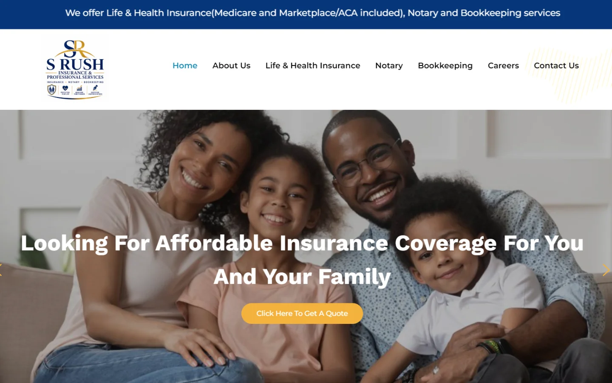
Website Maintenance & Enhancements
Maintained the WordPress site, updated branding, refined responsive layouts, and integrated Google Reviews.
Visit the SRUSH Insurance website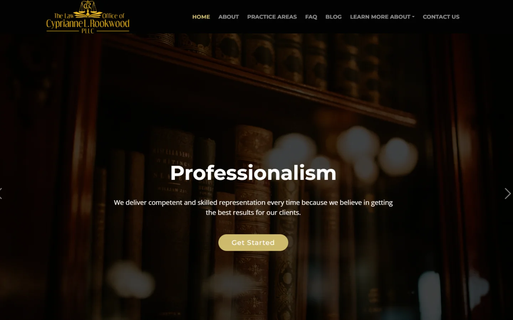
Website Design & Custom WordPress Development
Personally designed and developed a responsive website with a custom WordPress theme.
Visit the Rookwood Law website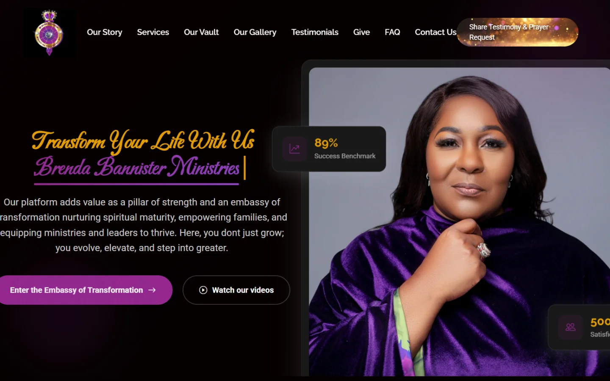
Website Design & Custom WordPress Development
Designed and developed a custom WordPress website, transforming original design concepts into a fully responsive, functional website with custom theme development and frontend implementation.
Visit Website